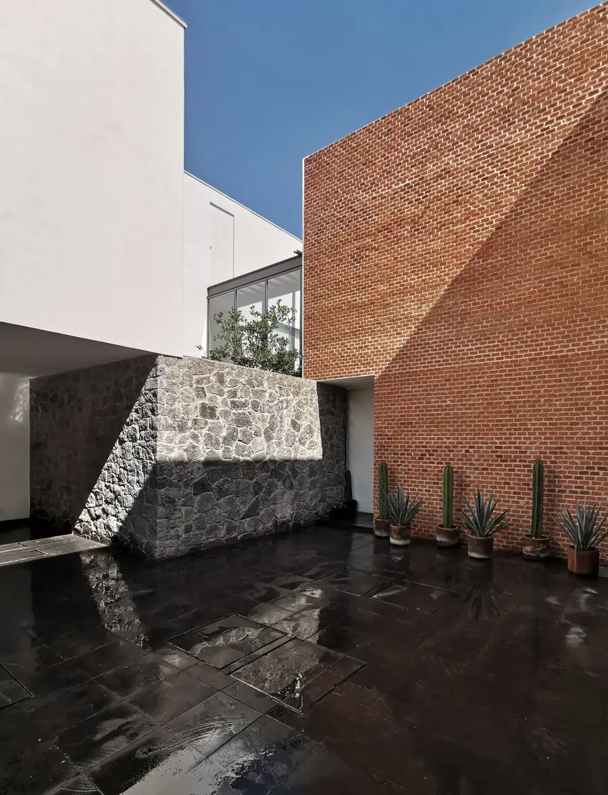
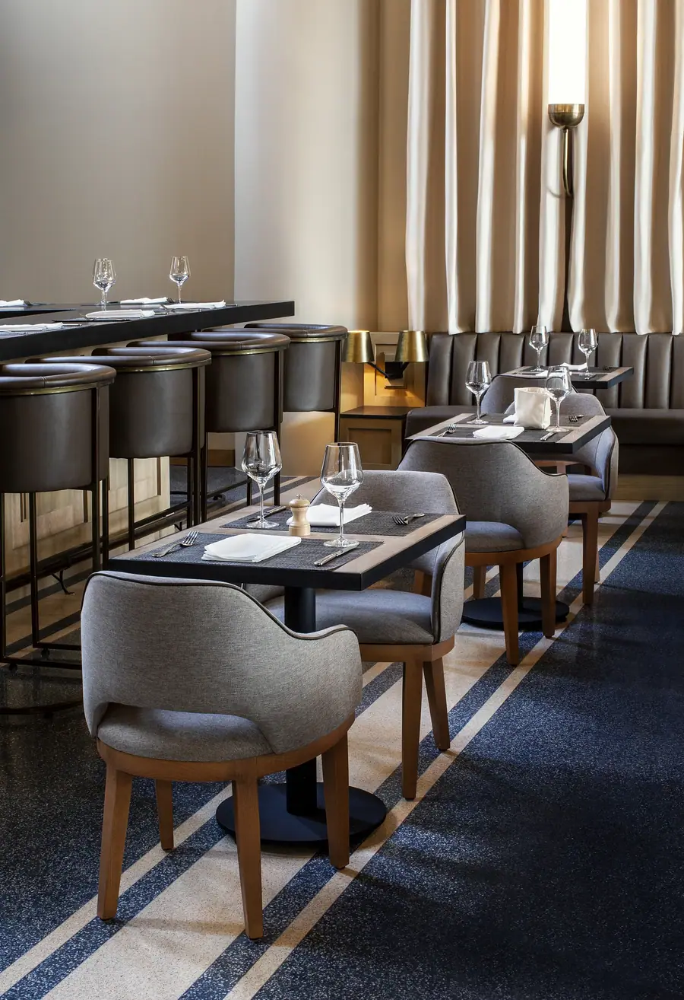
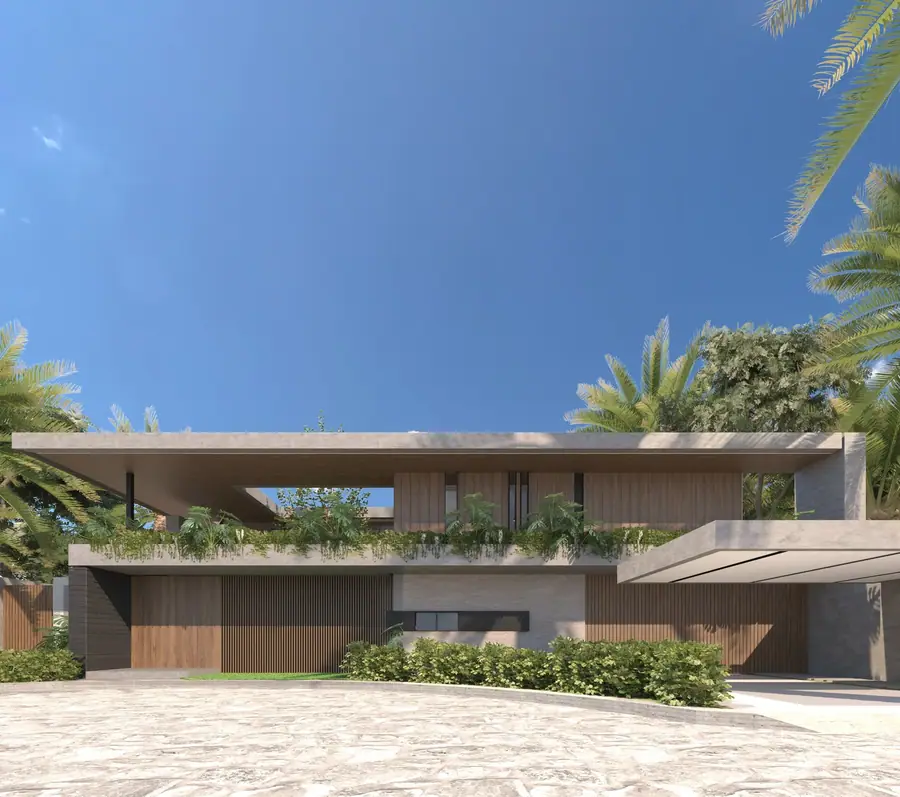
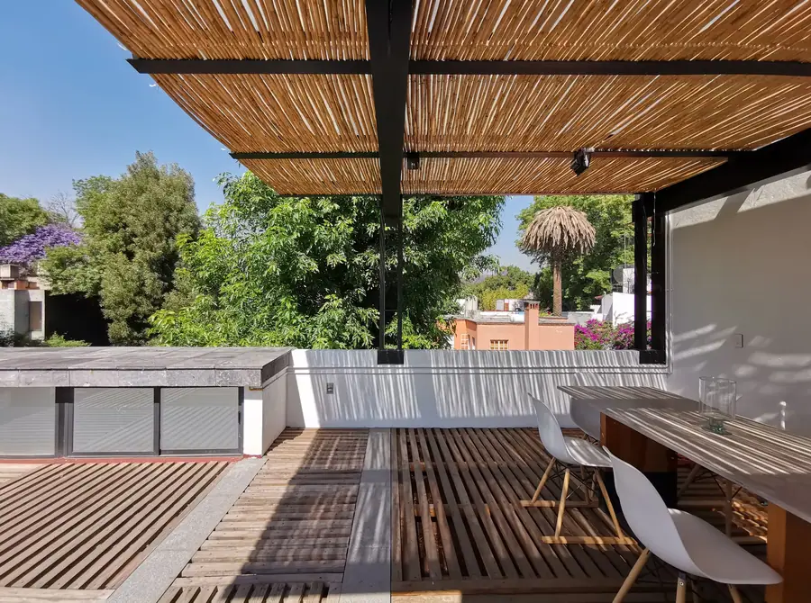

Arquitectura e interiorismo en Ciudad de México y Mérida
Trabajamos desde la concepción del proyecto hasta el término de la construcción, cuidando cada detalle en todas las etapas.

Casas, vivienda, oficinas y restaurantes

Casa Entre Patios

Casa en la montaña

KA’AX

Nana

Casa PB

El despacho
Fundado en 2015, Mexa Arquitectos es un despacho de arquitectura e interiorismo con bases en la Ciudad de México y Mérida que busca soluciones innovadoras para todo tipo de proyectos.
A lo largo de nuestra trayectoria, nos hemos dedicado a crear atmósferas únicas que satisfacen las necesidades de cada uno de nuestros clientes.
Trabajamos desde la concepción del proyecto y del programa arquitectónico hasta el término de la construcción o incluso hasta la promoción, venta y administración de desarrollos inmobiliarios, cuidando cada detalle en todas las etapas del proceso para lograr un resultado de la más alta calidad. Tenemos presencia en toda la República Mexicana.
- Fundado en
- 2015
- Bases
- Ciudad de México y Mérida
- Presencia
- Toda la República Mexicana
Reconocimientos
- 2019 Premio Noldi Schreck Ver SempaiFuente del Premio Noldi Schreck (se abre en otra pestaña)
- 2019 Premio Firenze Entremuros Ver NanaFuente del Premio Firenze Entremuros (se abre en otra pestaña)
- 2015 The Next Helsinki Ver el proyectoFuente de The Next Helsinki (se abre en otra pestaña)